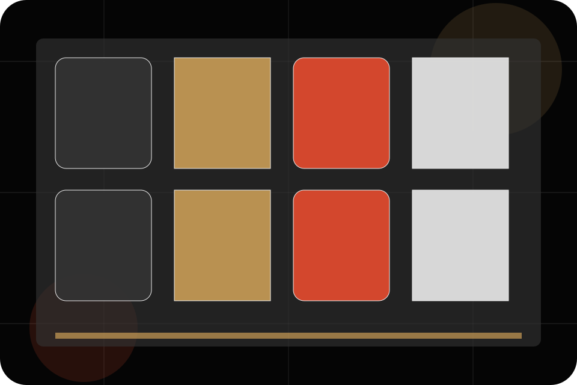
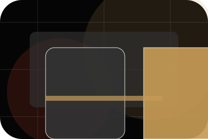
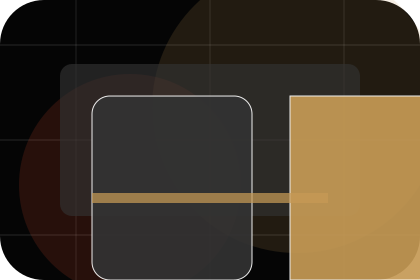
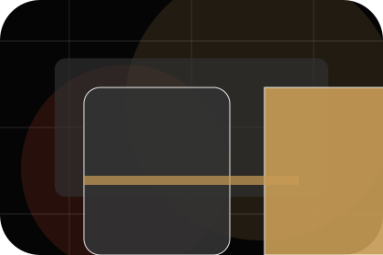
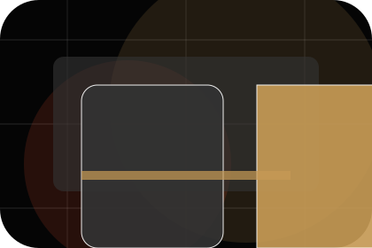
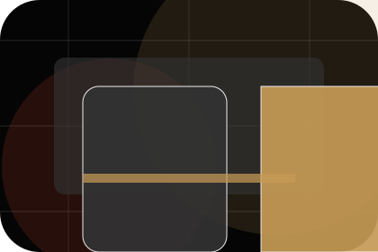

News / 01
News by Stage
News shaped for entertainment, music & performance decisions.
News opens as a clear entertainment decision hub: what Stage offers, who it helps, why it matters, and which route to take first.
The first screen combines positioning, proof, primary action, and fast internal navigation, so people can act immediately or compare the rest of the news route with context.
Exposure reviewControl planResponse route
Dark poster hero
Choose ticket fit
Select the closest route and Stage keeps the next step, proof, and follow-up expectation aligned with excitement and access.

News / 02
Updates
Updates gives researching visitors a practical route into guides, checklists, and comparison material without leaving the site structure.
Each resource behaves like a useful internal link, giving cold and warm visitors a way to learn, compare, and return to the action path.
Explore NewsA useful entry point for visitors who need more context before they view tickets.
A scannable comparison aid that makes research usable before the next decision.
A route back to support, services, or contact when the visitor is ready to act.
News / 03
Releases
Releases gives researching visitors a practical route into guides, checklists, and comparison material without leaving the site structure.
Each resource behaves like a useful internal link, giving cold and warm visitors a way to learn, compare, and return to the action path.
Explore NewsGuide
A useful entry point for visitors who need more context before they view tickets.
Checklist
A scannable comparison aid that makes research usable before the next decision.
Questions
A route back to support, services, or contact when the visitor is ready to act.
News / 04
Announcements
Announcements gives researching visitors a practical route into guides, checklists, and comparison material without leaving the site structure.
Each resource behaves like a useful internal link, giving cold and warm visitors a way to learn, compare, and return to the action path.
Explore NewsGuide
A useful entry point for visitors who need more context before they view tickets.
Checklist
A scannable comparison aid that makes research usable before the next decision.
Questions
A route back to support, services, or contact when the visitor is ready to act.
News / 05
Features
Features gives researching visitors a practical route into guides, checklists, and comparison material without leaving the site structure.
Each resource behaves like a useful internal link, giving cold and warm visitors a way to learn, compare, and return to the action path.
Explore News

Guide
A useful entry point for visitors who need more context before they view tickets.
News / 06
Interviews
Interviews gives researching visitors a practical route into guides, checklists, and comparison material without leaving the site structure.
Each resource behaves like a useful internal link, giving cold and warm visitors a way to learn, compare, and return to the action path.
Explore NewsGuide
A useful entry point for visitors who need more context before they view tickets.

Checklist
A scannable comparison aid that makes research usable before the next decision.

Questions
A route back to support, services, or contact when the visitor is ready to act.
News / 07
Archive
Archive gives researching visitors a practical route into guides, checklists, and comparison material without leaving the site structure.
Each resource behaves like a useful internal link, giving cold and warm visitors a way to learn, compare, and return to the action path.
Explore NewsGuide
A useful entry point for visitors who need more context before they view tickets.
Checklist
A scannable comparison aid that makes research usable before the next decision.

Questions
A route back to support, services, or contact when the visitor is ready to act.
News / 08
Read
Read gives researching visitors a practical route into guides, checklists, and comparison material without leaving the site structure.
Each resource behaves like a useful internal link, giving cold and warm visitors a way to learn, compare, and return to the action path.
Explore NewsGuide
A useful entry point for visitors who need more context before they view tickets.
Checklist
A scannable comparison aid that makes research usable before the next decision.
Questions
A route back to support, services, or contact when the visitor is ready to act.
News / 09
Subscribe
Stage closes the news route with a clear action, a quick reminder of the value, and a low-friction way to view tickets.
Visitors who are ready can use the primary action. Visitors who are still comparing can scan the section links, proof, and support routes before they view tickets.
Explore NewsReady
Use the primary CTA when the fit is clear and timing matters.
Compare
Review linked proof, questions, and support routes if more context is needed.
Response
Stage keeps the next reply focused on scope, timing, and the right first step.
Notes
Information is provided for planning and should be reviewed for the final client, location, and operating rules.